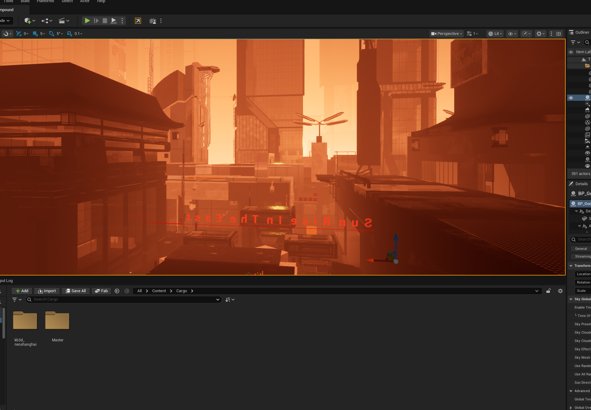
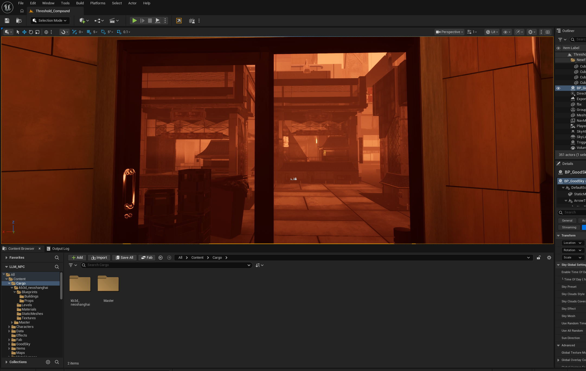
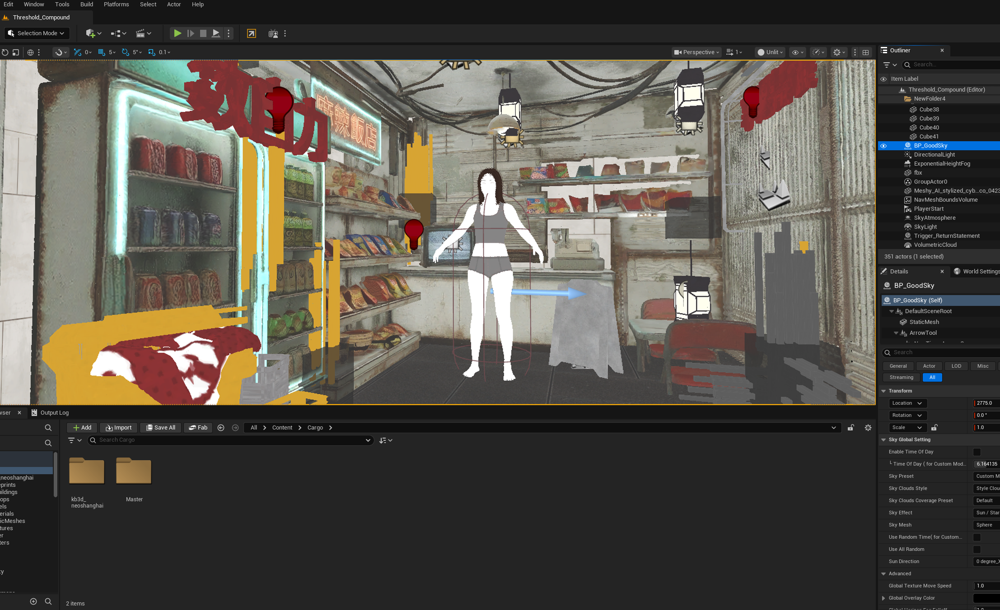
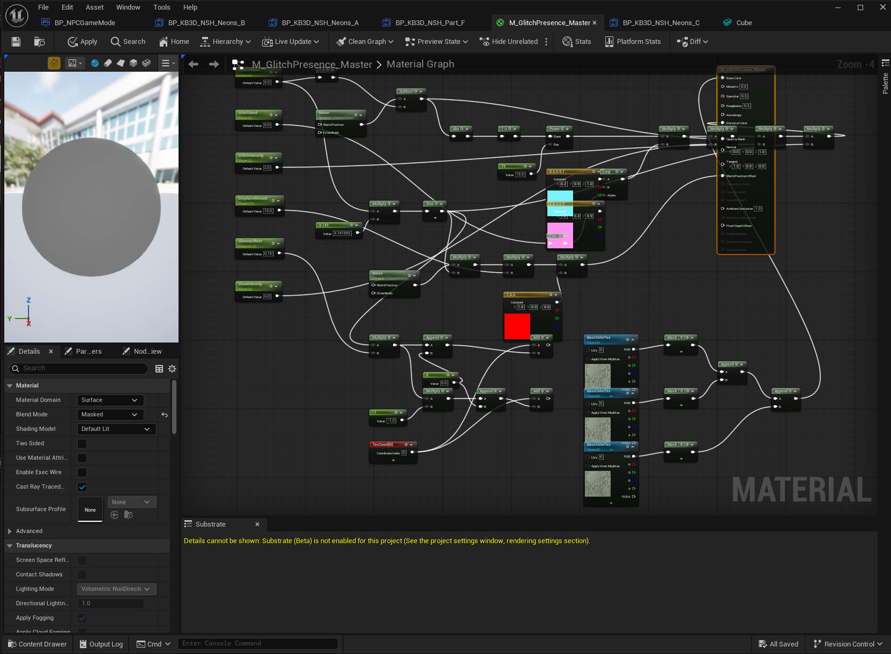
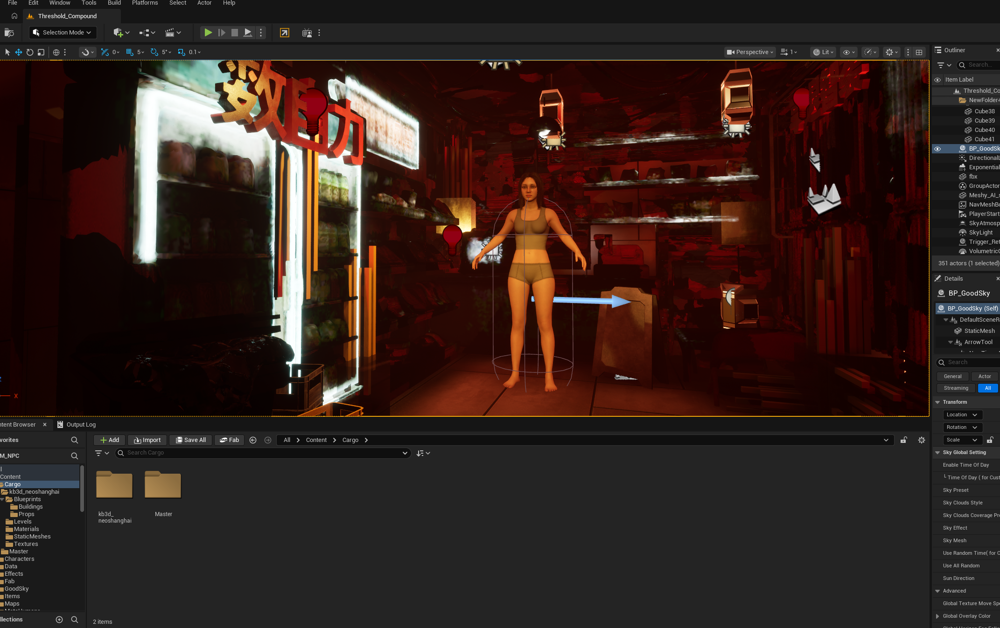
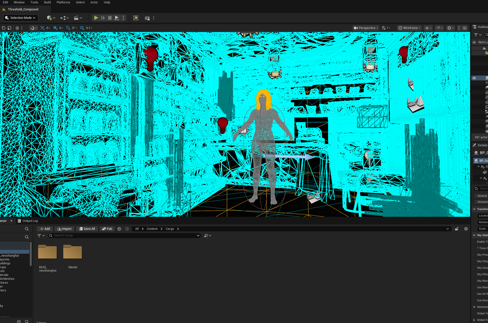

An Asian female MetaHuman, mid-20s, running a ground-floor convenience store inside a Chinese residential compound. Sadness 0.5 baseline. Hidden title: "The One Who Stayed."
Final review demo — scene, character, and emotion-driven template animation pipeline.
Threshold_Compound — a Neo-Shanghai residential block in perpetual orange-hour lighting. Volumetric fog, neon signage, red reversed-glyph marquee driven by a custom glitch material.
The Friend's back room is dressed with convenience-store shelving, hanging noodle racks, CRT counter, lanterns, cardboard boxes. Enclosed interior — no exterior sightlines from inside the store.
Lighting + set dressing is staging; the scene is not the focus of this presentation.




Authored in MetaHuman Creator (MH_F_25), assembled to a runtime Blueprint, and wrapped inside BP_NPC_Friend alongside the full LLM-NPC component stack: dialogue, emotion, STT, TTS, facial recognition, fallback.
Runs Claude for dialogue, Whisper for STT, ElevenLabs for TTS. Her personality, voice, and emotional transition costs are authored in DA_Threshold_Friend. Her withheld truth + reflection aspect live in a social-graph data asset.

The MetaHuman Creator preview panel advertises Template Animation swapping (Idle, Happy A/B, Sad A/B, Anger A/B, Fear A/B, Surprise A/B). In practice, this is an editor-time preview system:
MetaHumanCharacterEditor — editor-only module.UMetaHumanComponentUE's runtime API is minimal — it wires one bool (body correctives) and exits.
Verified via plugin source (MetaHumanComponentUE.cpp, MetaHumanCharacterEditorSettings.cpp) and a runtime component scan.

The plugin ships the actual template clips as standalone UAnimSequence assets under /MetaHumanCharacter/Optional/Animation/TemplateAnimations/. We reach them directly and drive The Friend through the standard animation pipeline.
DefaultSlot node: ABP_EmotionSlot_Face, ABP_EmotionSlot_Body.SetAnimInstanceClass, only when they have no primary AnimInstance (UAF case).PlaySlotAnimationAsDynamicMontage — UE5 auto-crossfades from the outgoing montage to the incoming one on the same slot.
UTemplateAnimationDriverComponent — one component, ~400 LOC, reusable across NPCs; falls back to PlayAnimation hard-swap on non-UAF characters.
By default, template selection listened to UEmotionComponent::OnEmotionChanged. That component runs a PAD state machine with slow decay (~5 min), so a single intense signal holds for a long time — even after Claude had moved on.
Template animation now subscribes to UDialogueComponent::OnDialogueResponseReceived instead. Each Claude turn carries an EEmotionType NPCEmotionHint — we use that directly to pick the next template, and the montage crossfade handles the transition on screen.
bDriveFromDialogueResponse on the driver component.